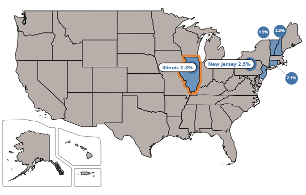

For many folks, the Illinois property tax system is — to quote Winston Churchill’s description of the Soviet Union — “a riddle, wrapped in a mystery, inside an enigma.”
Property taxes are determined by an enigmatic process, with nearly a dozen steps that include assessments, appeals, equalization, levies, rates, bills, collections, auctions, liens, redemptions and foreclosures.
The Illinois Property Tax Code, the law that lays out the rules for setting, collecting and enforcing the tax, only adds to the mystery. The code exceeds 200,000 words. That’s more than you’ll find in the average novel — and it’s a lot harder to read.
And the code changes constantly. It’s altered in nearly every General Assembly session as legislators work to make it fairer, more palatable and efficient. Even if you master the tax code, you’ll need frequent refresher courses.
Obviously, most people don’t have the time or desire to read the code, let alone master it. That’s where we come in.
On XXXday, July XX, we posted online our Property Tax Primer — a document meant to unwrap the riddle of property taxes in clear and precise language.
The Property Tax Primer’s introduction is meant to put the issue of Illinois property taxes in broad context. The introduction gives an overview of the property tax system and how it has morphed over the years from a progressive tax to one that may no longer reflect a property owner’s ability to pay.
In addition, the introduction explains why Illinois has the
second-highest median residential property tax bill of all U.S. states. (Hint:
limited state education funding, deeply underfunded
government worker pension systems and more units of local government than
any other state in the Union.)

The core of the Tax Primer provides a step-by-step explanation how the property tax system works in Illinois, from the initial step of assessing, or determining, the market value of homes and businesses to the final step of enforcing collections through tax sales.
At the back of the primer, there is a glossary explaining the often arcane terms used in the Illinois Property Tax Code.
The primer will be updated annually to reflect changes in the underlying data or the Property Tax Code. That will make it a living document — a resource that we hope serves as a reference point for years to come.